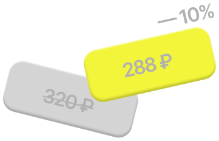
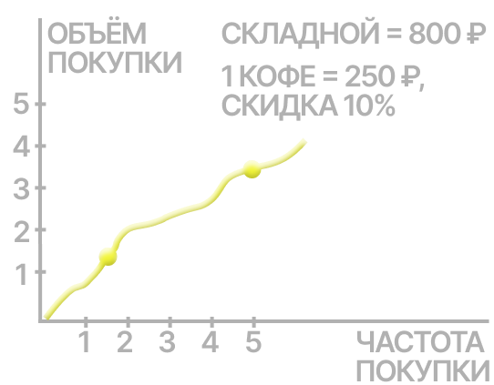

во многих кофейнях действует скидка 5–10%

ежегодно уходит 200–300 стаканов на человека


По сути жидкие средства — это вода в пластиковой упаковке, которая быстро заканчивается. Твёрдый формат экономит деньги, сокращает мусор и упрощает хранение
Если вы редко берёте напитки навынос. Привычка забывать вещи зачастую снижает выгоду. Кроме того, не всегда удобно подстраиваться под стандартный объём, а мыть стакан регулярно порой просто не хочется

Экономит ваши деньги благодаря скидкам в кофейнях и сокращает количество мусора, заменяя сотни неперерабатываемых одноразовых стаканов в год
Пить кофе из своего стакана — это удобная рутина, которая экономит тысячи рублей и уменьшает вред для планеты без лишних усилий